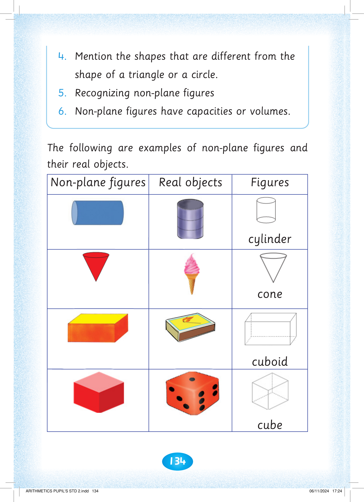
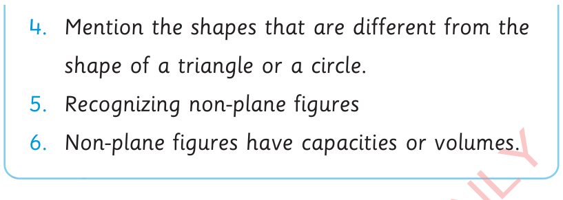

134

Exercise 4 continues. 4. Mention the shapes that are different from the shape of a triangle or a circle. 5. Recognizing non-plane figures. 6. Non-plane figures have capacities or volumes.


shape of a triangle or a circle.
5. Recognizing non-plane figures
6. Non-plane figures have capacities or volumes.
The following are examples of non-plane figures and their real objects. The table columns are Non-plane figures, Real objects and Figures. A cylinder is shown with a cylindrical tin. A cone is shown with an ice-cream cone. A cuboid is shown with a matchbox.
The following are examples of non-plane figures and their real objects.
Non-plane figures
Real objects
Figures
cylinder
cone
cuboid
A cube is shown with a die.



ARITHMETICS PUPIL'S STD 2.indd 134
06/11/2024 17:24